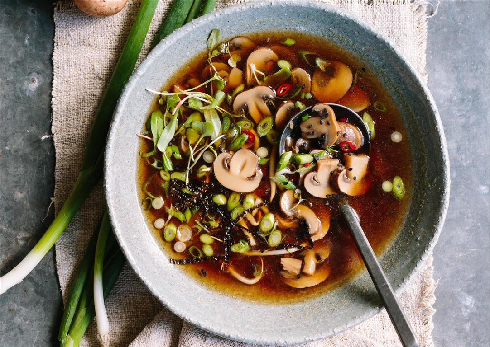

Homemade Chicken Soup

Soup is a primarily liquid food, generally served warm or hot (but may be cool or cold), that is made by combining ingredients of meat or vegetables with stock, milk, or water. Hot soups are additionally characterized by boiling solid ingredients in liquids in a pot until the flavors are extracted, forming a broth.
Ingredients
- 1 (3 pound) whole chicken
- 4 carrots, halved
- 4 stalks celery, halved
- 1 large onion, halved
- water to cover
Steps
-
Put the chicken, carrots, celery and onion in a large soup pot and cover with cold water. Heat and simmer, uncovered, until the chicken meat falls off of the bones (skim off foam every so often).
-
Take everything out of the pot. Strain the broth. Pick the meat off of the bones and chop the carrots, celery and onion. Season the broth with salt, pepper and chicken bouillon to taste, if desired. Return the chicken, carrots, celery and onion to the pot, stir together, and serve.